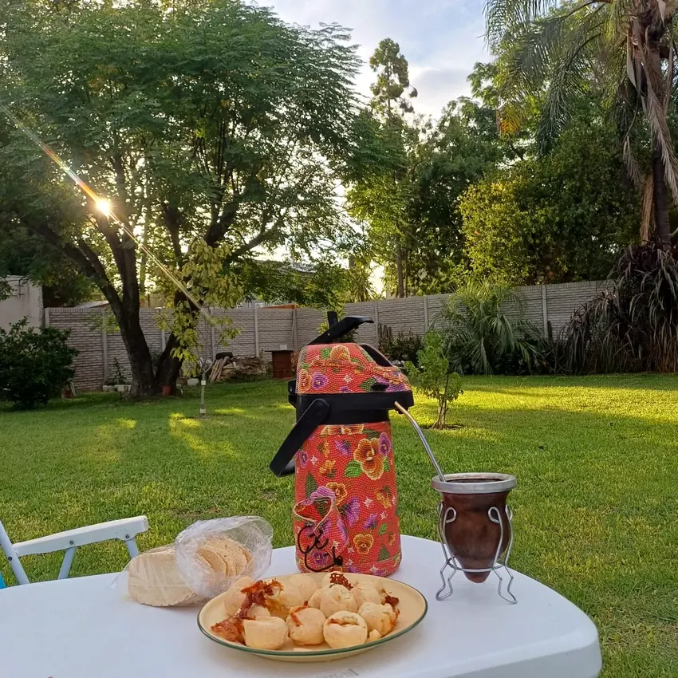

LoteoDisponible
LoteoDisponibleCapilla del Señor
La Loma · Etapa III
300–438 m²Sin expensasHasta 36 cuotas
Valor
Desde U$S 28.000
Ver propiedad

Soy Sabrina y en cada consulta mi misión es que encuentres tu lugar en el mundo con transparencia, calidez y seguridad jurídica.
 LoteoDisponible
LoteoDisponible Terreno / ComercialDisponible
Terreno / ComercialDisponible CasaDisponible
CasaDisponible CasaDisponible
CasaDisponible TerrenoDisponible
TerrenoDisponibleInformación concreta para comparar opciones y contacto directo cuando una propiedad realmente te interesa.

La web concentra la información principal para que puedas filtrar, comparar y abrir cada ficha. Cuando una opción te interesa, coordinamos la visita y avanzamos con el asesoramiento.
Contar qué estoy buscando